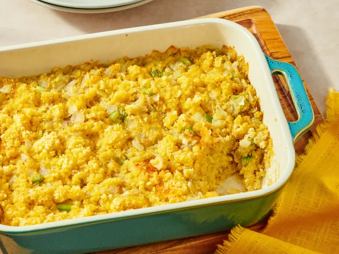

Mashed Sweet Potatoes

Description
My grandmother always made this cornbread dressing for holiday dinners and
for family gatherings at other times of the year. Use your favorite
cornbread mix to make a batch of cornbread, and then crumble it for use in
this family-favorite recipe. I hope you enjoy it as much as I have!
Ingredients
- 6 medium sweet potatoes, peeled and cubed
- 3/4 cup warm 2% milk, or as needed
- 1/2 cup softened butter, cut into chunks
- 3/4 cup maple syrup, or to taste
How to Make Cornbread Dressing
You'll find the full, step-by-step recipe below — but here's a brief
overview of what you can expect when you make this top-rated cornbread
dressing:
- Sauté the vegetables in butter until soft.
- Add the sautéed vegetables to the crumbled cornbread.
- Stir in the remaining ingredients and mix until well-combined.
-
Transfer the dressing to a prepared baking dish and bake until golden
brown.
Steps
- Gather all ingredients.
-
Preheat the oven to 350 degrees F (175 degrees C). Grease a 7x11-inch
baking dish. Place crumbled cornbread in a large bowl.
-
Melt butter in a large skillet over medium heat. Add onion and celery
and sauté until soft, 5 to 7 minutes.
-
Add sautéed onion and celery to the crumbled cornbread. Stir in chicken
stock, eggs, sage, salt, and pepper until well combined. Pour dressing
into the prepared baking dish.
-
Bake in the preheated oven until dressing just starts to turn golden
brown around the edges, about 30 minutes.
- Serve warm. Enjoy!
Home